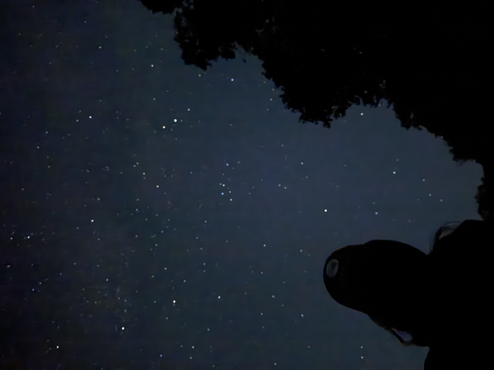
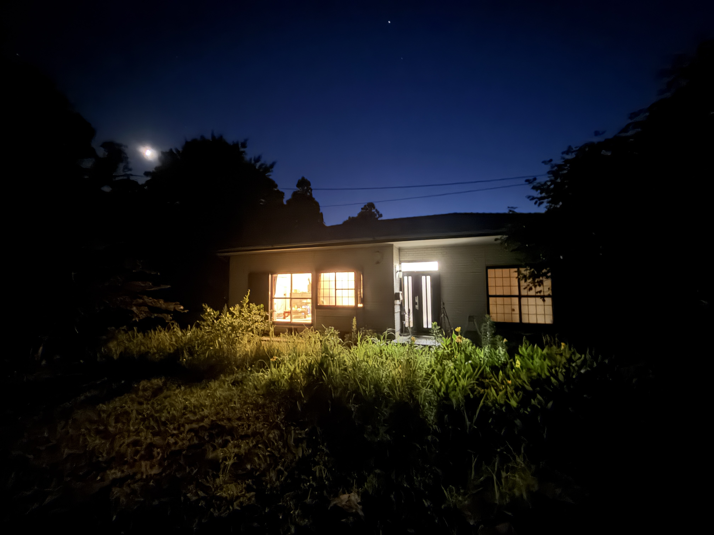
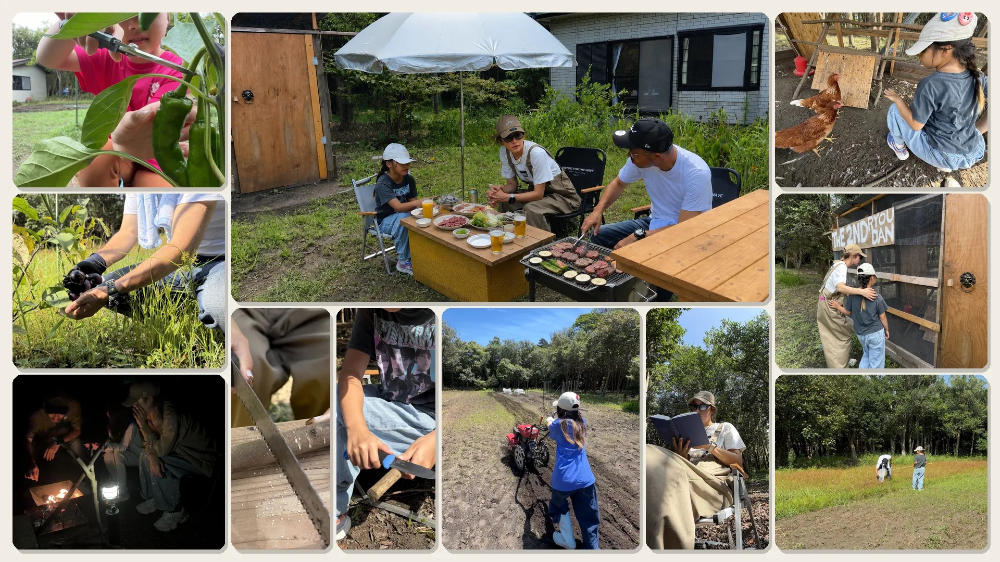

籠—RAW—
スマホを置いて、島時間を。
伊豆大島で、まるごと一軒家を貸し切って。
何もせず、くつろぐ、鳥の囀りと、木々の音、虫の声。
広大なフィールドに隣接した籠 —RAW— では、キャンプ、BBQ、自然と遊ぶことができます。
籠 —RAW— の全体像
家族だけで、包まれる場所
- ① 籠 —RAW— 宿泊棟。家族でくつろぐ、一棟貸しの母屋
- ② 農具倉庫 農具、耕運機を収める。滞在中は自由に
- ③ 星空広場 家族で見上げる、満天の星
- ④ 鶏小屋 三羽の鶏が暮らす。子供が追いかけっこできる
- ⑤ 焚き火エリア 家族で火を囲む、焚き火の時間
- ⑥ フィールド テニスコート七面分。子供が走り回れる広さ
- ⑦ 畑エリア 親子で耕し、収穫できる
闇の中、満点の星空に囲まれる。まるで、宇宙にいるかのように。
※AI画像ではなく、籠 —RAW— の「星空広場」からの無加工写真です。


広大なフィールドに隣接する一戸建て。そこでは家族、大切な人とゆっくり語ることができます。
『籠 —RAW—』にあるもの・ないもの
ある
- 一棟まるごと貸し切り
- 広いフィールド
- 鶏 —— えさやり、追いかけっこ
- 畑 —— 親子で収穫
- 果樹
- 椿林
- 焚き火 —— 家族で囲む
- 虫取り、木登り、泥んこ
- 星空
- 鳥のさえずり
- 野生のリス
- 家族だけの、時間
ない
- スマホ —— 見なくていい
- WiFi、インターネット
- テレビ、ゲーム
- 他の宿泊客
- 決まった予定、プログラム
- 急かすもの、邪魔するもの
- SNS
- メールへの対応
- 雑音
- 肩書き、役割
- 一流ホテルのような、もてなし
- 至れり尽くせりの、サービス
泊まる場所ではなく、過ごす場所へ。
